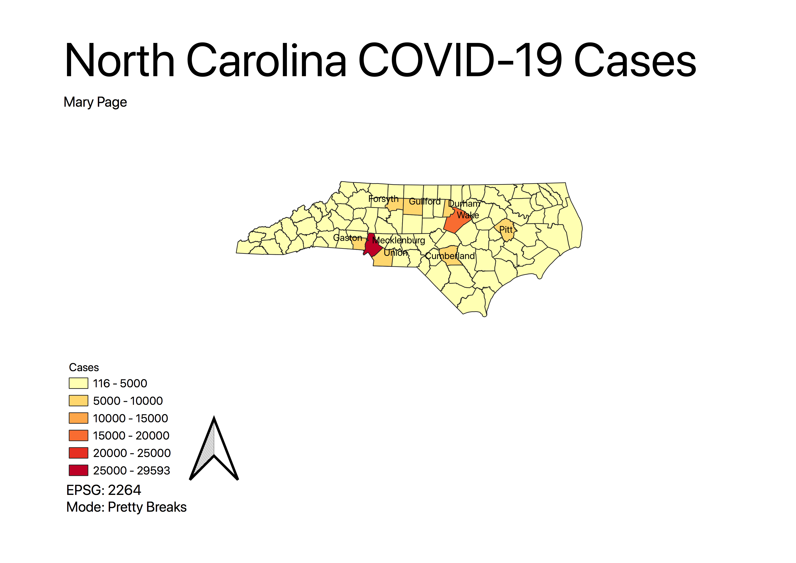
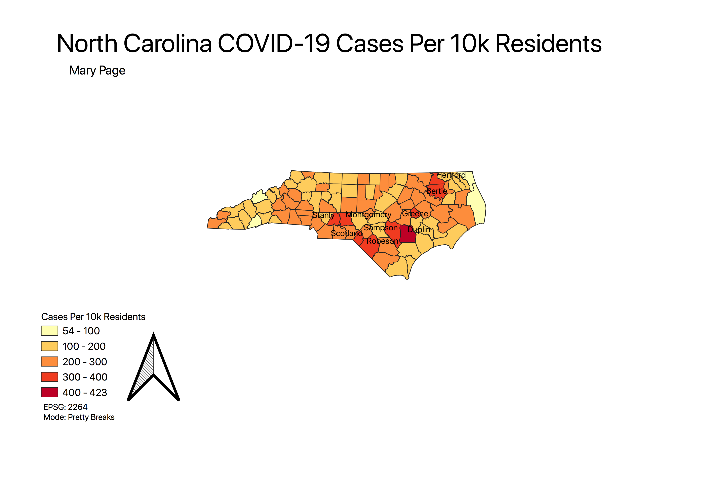
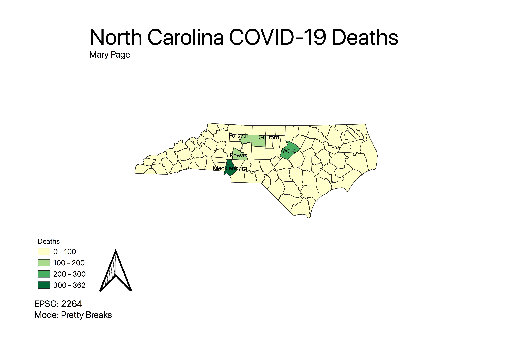
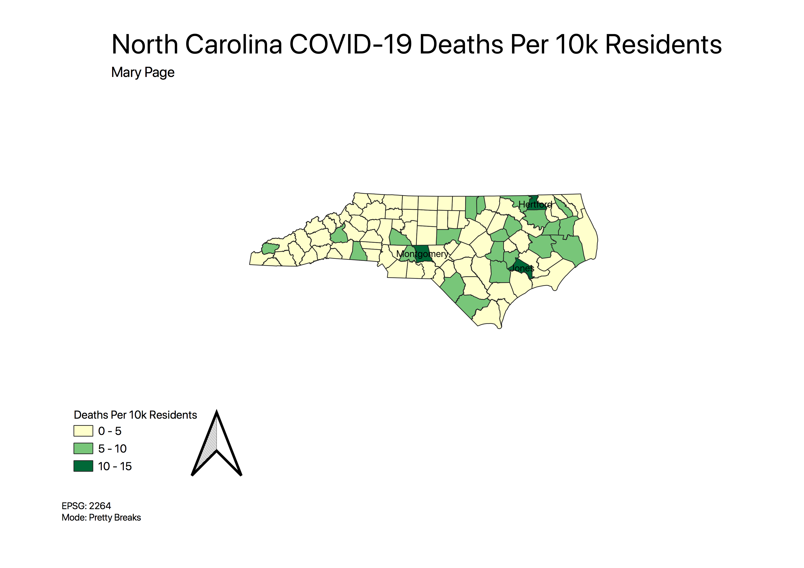

Homework 9: Make a choropleth or proportional symbol map
Mary Page
Topic: North Carolina COVID-19 Cases and Deaths
I chose this topic because I have several family members that work in healthcare, so COVID-19 cases are frequently discussed amongst my family.
Choropleth Maps:
Cases Choropleth Map

This map shows the total number of COVID-19 cases in North Carolina per county. Unsuprisingly, both Wake and Mecklenburg and their nearby counties, which have high populations, have the most number of COVID-19 cases. However, I was suprised that most counties have only had between 116-5000 cases.
Cases Per 10k Residents Choropleth Map

This map shows North Carolina COVID-19 cases per 10k residents per county. This map shows much more variation than the previous map. I find this map interesting, as several counties with lower total counts of COVID-19 cases (116-5000), have a high number of cases per 10k residents. For example, Greene, Sampson, Dublin, Stanly and other counties have fairly low counts of COVID-19 cases on the above maps but all have high counts of COVID-19 cases per 10k residents.
Deaths Choropleth Map

This map shows the total number of COVID-19 deaths per county. Similiarly to the cases map, there is not much variation amongst the counties across the state, as most counties have had between 0-100 COVID-19 deaths. And once again, unsuprisingly, Wake and Mecklenburg have fairly high COVID-19 deaths, which can be explained by their high populations. However, interestingly, Rowan, Forsyth and Guilford counties have a higher number of COVID-19 deaths than I would have expected. Perhaps Rowan county's higher number of deaths can be explained by their higher number of cases per 10k residents as seen in the map above.
Deaths Per 10k Resdients Choropleth Map

This map shows North Carolina COVID-19 deaths per 10k residents per county. Most of the counties have had between 0-5 COVID-19 deaths per 10k residents, with a number having between 5-10 COVID-19 deaths per 10k residents. Only Montgomery, Hertford, and Jones county have had between 10-15 COVID-19 deaths per 10k residents. Perhaps Montgomery and Hertford counties' higher COVID-19 deaths per 10k residents can be explained by their higher COVID-19 cases per 10k residents.
Data:
... = $0
CSV dataset (clean)
Link to shapefile (as a geoJSON)